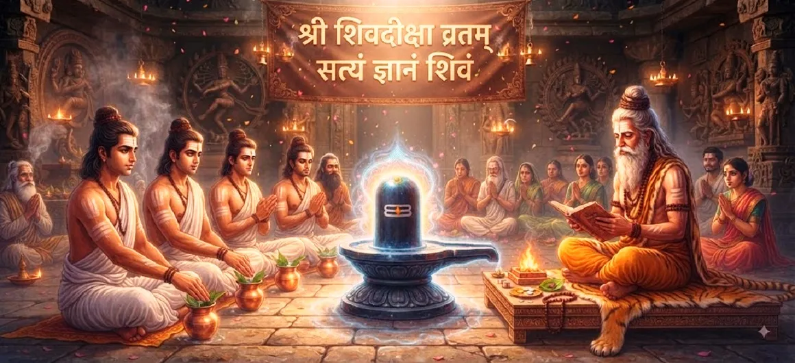

शिव पूजा के पवित्र व्रत
कोटिरुद्र संहिता का तीसवां अध्याय पवित्र प्रतिज्ञाओं (व्रतों), पवित्र अनुष्ठानों और आध्यात्मिक अनुशासनों की रूपरेखा देता है जो भगवान शिव की समर्पित पूजा को बनाए रखते हैं।
रुद्राभिषेक की महिमा का अनुसरण करते हुए, यह अध्याय इस बात पर जोर देता है कि व्यक्तिगत अखंडता, आत्म-संयम और दैवीय अनुशासनों के प्रति अटूट पालन द्वारा समर्थित होने पर अनुष्ठान कार्य सच्ची शक्ति प्राप्त करते हैं।
यह दैनिक धार्मिक आचरण में भक्ति को स्थापित करने का लक्ष्य रखने वाले साधकों के लिए एक आवश्यक मार्गदर्शिका के रूप में कार्य करता है।
अध्याय 30 की मुख्य बातें
पवित्र व्रत
शिव व्रत आदि का माहात्म्य
आत्मसंयम
इन्द्रियों को वश में करना तथा मन और वाणी को शुद्ध करना।
धर्मनिष्ठ आचरण
सत्य, पवित्रता और धर्म के अनुरूप जीवन जीना।
आंतरिक अनुशासन
सांसारिक प्रलोभनों के विरुद्ध लचीलापन बनाना।
पंचाक्षर फोकस
पवित्र मंत्र जप के माध्यम से निरंतर स्मरण।
ईश्वरीय कृपा
दृढ़ प्रतिज्ञाओं के माध्यम से शिव का गहन आशीर्वाद अर्जित करना।
इस अध्याय में मुख्य विषय
शिव पूजा में व्रतों का महत्व
पवित्र व्रतों को स्वैच्छिक आध्यात्मिक प्रतिबद्धताओं के रूप में समझाया जाता है जो मानव इच्छा को अनुशासित करते हैं और इसे भगवान शिव के ब्रह्मांडीय व्यवस्था के साथ संरेखित करते हैं।
वे सामान्य दिनचर्या जीवन को एक जागरूक आध्यात्मिक यात्रा में बदल देते हैं।
शरीर, मन और वाणी की शुद्धि
पाठ इस बात पर जोर देता है कि सच्ची पूजा के लिए तीनों स्तरों पर शुद्धता की आवश्यकता होती है: शारीरिक स्वच्छता, द्वेष से मानसिक मुक्ति, और सच्ची, सौम्य वाणी।
कोई अशुद्ध यंत्र दिव्य प्रकाश को प्रतिबिंबित नहीं कर सकता।
इंद्रियों पर प्रभुत्व (इंद्रिय निग्रह)
इंद्रियों पर नियंत्रण को एक महत्वपूर्ण व्रत के रूप में दर्शाया गया है। मन को संवेदी विकर्षणों से रोककर, साधक अपनी सारी आंतरिक ऊर्जा को शिव के ध्यान की ओर निर्देशित करता है।
आत्म-निपुणता अटल आध्यात्मिक शक्ति का निर्माण करती है।
उपवास और आहार अनुशासन
पवित्र दिनों में उपवास (उपवास) शारीरिक प्रणाली को शुद्ध करता है, पाचन अग्नि को शांत करता है, और उच्च सत्य पर ध्यान केंद्रित करने के लिए मानसिक ऊर्जा को शारीरिक भारीपन से मुक्त करता है।
यह मन को शारीरिक इच्छाओं पर विजय पाने के लिए प्रशिक्षित करता है।
सत्य और धर्म का पालन
शिव के भक्त को पूर्ण सत्यता, करुणा और गैर-चोट न पहुँचाना चाहिए, क्योंकि ये गुण महादेव को किसी भी बाहरी अनुष्ठान से अधिक प्रिय हैं।
धर्म सच्ची भक्ति का आधार है।
भगवान शिव का निरंतर स्मरण
यह अध्याय दैनिक कर्तव्यों के बीच भगवान शिव के पवित्र नामों और मंत्रों के मौन जप के माध्यम से उनकी निरंतर याद बनाए रखने को प्रोत्साहित करता है।
याद कर्म को पूजा में बदल देती है।
महा शिवरात्रि का महान व्रत
रात्रि जागरण, उपवास और पूजा के साथ महा शिवरात्रि का व्रत रखने का विशेष उल्लेख किया गया है, जो भारी कर्मों को जला देता है और सर्वोच्च पुण्य प्रदान करता है।
यह सभी आध्यात्मिक व्रतों में सर्वोत्तम रत्न है।
मानसिक कमजोरी और भ्रम पर काबू पाना
प्रतिज्ञाओं का दृढ़तापूर्वक पालन आंतरिक संकल्प को मजबूत करता है, जिससे भक्त को भय, आलस्य, प्रलोभन और आध्यात्मिक अज्ञानता पर विजय पाने में मदद मिलती है।
अनुशासन भ्रम के विरुद्ध कवच बन जाता है।
दृढ़ पालन का आध्यात्मिक फल
जो लोग शिव के पवित्र व्रतों का निष्ठापूर्वक पालन करते हैं वे गहन आंतरिक शांति, बुद्धि की स्पष्टता और बिना शर्त भक्ति के निरंतर खिलने का अनुभव करते हैं।
उनके जीवन अनुग्रह के उज्ज्वल प्रतिबिंब बन जाते हैं।
अध्याय 31 की ओर
पूजा के पवित्र व्रतों और अनुशासनों को स्थापित करने के बाद, कथा शुद्ध शिव भक्ति के गौरवशाली और कई गुना फलों का पता लगाने के लिए तैयार होती है।
पाठकों को अध्याय 31, शिव भक्ति का फल जारी रखने के लिए आमंत्रित किया जाता है।
अध्याय 30 की मुख्य शिक्षाएँ
पवित्र प्रतिबद्धता
व्रत आध्यात्मिक जीवन की संरचना करते हैं और मन को एकाग्र करते हैं।
त्रिगुण पवित्रता
शरीर की पवित्रता, वाणी में सत्यता, मन में पवित्रता।
इंद्रिय निपुणता
इंद्रियों को विकर्षणों से दूर करने से शक्ति का निर्माण होता है।
उपवास अनुग्रह
उपवास शारीरिक और मानसिक प्रणालियों को शुद्ध करता है।
शिवरात्रि शिखर
शिवरात्रि पर रात्रि जागरण से परम पुण्य मिलता है।
दृढ़ संकल्प
अनुशासन से भ्रम का नाश होता है और शिव की कृपा प्राप्त होती है।
आध्यात्मिक चिंतन
व्यक्तिगत अनुशासन के बिना अनुष्ठान पूजा बिना पतवार के नाव की तरह है। इस अध्याय में वर्णित पवित्र व्रत और अनुष्ठान रोजमर्रा की जिंदगी में भक्ति को स्थापित करने के लिए आवश्यक महत्वपूर्ण संरचना प्रदान करते हैं। आत्म-संयम, सत्यता, उपवास और भगवान शिव के निरंतर स्मरण का अभ्यास करके, हम बेचैन मन को वश में करते हैं और अपने दैनिक अस्तित्व को निरंतर प्रसाद में बदल देते हैं। ये अनुशासन हमें प्रतिबंध में बांधने के लिए नहीं हैं, बल्कि हमें सांसारिक इच्छाओं के अराजक खिंचाव से मुक्त करने के लिए हैं, हमें सुरक्षित रूप से महादेव के चरणों तक ले जाने के लिए हैं।
अध्याय 30 का संदेश जीना
प्रदोष और शिवरात्रि जैसे शुभ दिनों पर ईमानदारी से व्रत रखकर पवित्र व्रतों को अपनी आध्यात्मिक दिनचर्या में शामिल करें।
अपनी वाणी पर नियंत्रण रखें, सत्यता का अभ्यास करें और अपनी इंद्रियों को नकारात्मकता से दूर रखें, अपने मन को पंचाक्षर मंत्र के निरंतर जाप में लगाएं।
आपके दैनिक अनुशासन भगवान शिव के प्रति आपके गहरे प्रेम और समर्पण को प्रतिबिंबित करें।
प्रमुख आध्यात्मिक अवधारणाएँ
दैवीय कृपा के लिए स्वैच्छिक आध्यात्मिक अनुशासन अपनाया गया।
भटकती हुई इंद्रियों पर नियंत्रण और नियंत्रण।
भौतिक शरीर को शुद्ध करना और मन को अंदर की ओर केंद्रित करना।
शरीर में पवित्रता, वाणी में सत्यता और विचारों में पवित्रता।
भगवान शिव को समर्पित सर्वोच्च रात्रि जागरण और व्रत।
धर्म के निरंतर पालन से आंतरिक शक्ति का निर्माण होता है।
अध्याय सारांश
कोटिरुद्र संहिता अध्याय 30 में समर्पित शिव पूजा के लिए आवश्यक पवित्र प्रतिज्ञाओं, पवित्र अनुष्ठानों और आध्यात्मिक अनुशासनों की रूपरेखा दी गई है। यह महा शिवरात्रि पर विशेष ध्यान देने के साथ व्रत, उपवास, इंद्रिय नियंत्रण और सत्यता के माध्यम से शरीर, मन और वाणी की शुद्धि पर जोर देता है। इन मूलभूत विषयों को स्थापित करके, अध्याय पाठक को अध्याय 31 के लिए तैयार करता है, जो शिव भक्ति के गहन फलों की पड़ताल करता है।
अक्सर पूछे जाने वाले प्रश्न
1. कोटिरुद्र संहिता अध्याय 30 का केंद्रीय विषय क्या है?
अध्याय 30 भगवान शिव की समर्पित और फलदायी पूजा को बनाए रखने के लिए आवश्यक पवित्र प्रतिज्ञाओं (व्रतों), पवित्र अनुष्ठानों और आध्यात्मिक अनुशासनों पर केंद्रित है।
2. शिव पूजा में पवित्र व्रत क्यों महत्वपूर्ण हैं?
प्रतिज्ञाएँ आंतरिक संयम प्रदान करती हैं, भटकते मन को केंद्रित करती हैं, शरीर और वाणी को शुद्ध करती हैं और आध्यात्मिक उन्नति के लिए एक अनुशासित आधार तैयार करती हैं।
3. अध्याय 30 पिछले अध्याय से कैसे जुड़ता है?
जबकि अध्याय 29 में रुद्राभिषेक की अनुष्ठान पूजा का विवरण दिया गया है, अध्याय 30 में व्यक्तिगत प्रतिज्ञाओं और अनुशासनों की रूपरेखा दी गई है जो एक भक्त के दैनिक और सामयिक आध्यात्मिक अभ्यास को बनाए रखते हैं।
4. इस अध्याय में किस प्रकार के अनुष्ठानों पर प्रकाश डाला गया है?
अध्याय में उपवास, सत्यता, इंद्रियों पर नियंत्रण, पंचाक्षर मंत्र का नियमित जप और धार्मिक आचरण के प्रति समर्पण पर प्रकाश डाला गया है।
5. इस अध्याय में कौन सी कथा वर्णित है?
कथा अध्याय 31, 'शिव भक्ति का फल' में परिवर्तित होती है।
6. शिव के पवित्र व्रतों का पालन करने का अंतिम परिणाम क्या है?
इन व्रतों को रखने से आंतरिक चेतना शुद्ध होती है, भगवान शिव की सर्वोच्च कृपा प्राप्त होती है, और सीधे शाश्वत शांति और मुक्ति मिलती है।
"पवित्र व्रत और आत्म-संयम के माध्यम से, मन शुद्ध होता है और आत्मा भगवान शिव की कृपा का पात्र बन जाती है।"
कोटिरुद्र संहिता के माध्यम से जारी रखें
अध्याय 30 शिव पूजा की पवित्र प्रतिज्ञाओं की पड़ताल करता है। अध्याय 31, शिव भक्ति का फल जारी रखें।